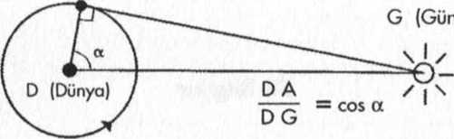

Aristarcos'un Dünya'nın Güneş ve Ay'a olan uzaklığı ölçtüğü yöntem
G (Güneş)
G (Güneş)

Arşimet tarafından İskenderiye'deki dostlarına gönderilen hu problem bir hayvan sürüsündeki toplanı hayvan sayısını bulmak üzerinedir. Hayvanlar arsındaki karmaşık oranlar cevabın bulunmasını zorlaştırmaktadır. (Beyaz boğalar siyah boğaların karesi kadardır vs.) Arşimet sorunun cevabını asla vermedi. Oysa bugün biliyoruz ki sürüdeki hayvanların sayısı için 120,000 haneli bir rakam çıkmaktadır!
Oysa paraleller hakkında Öklit sonrası ilk ciddi araştırma ancak 19. yüzyılda yapıldı. 0 tarihten sonra da Öklid’in anlayışı terk edilmeye başladı. Öklit'in düzlemsel geometrisi verine eğri kavramı işin içine girdi. Son olarak 20. yüzyılda Einstein evrenin düzlemsel olmadığını ispatladı.
Asal sayılar Pisagor zamanından beri esrarlarını korumaktaydılar. Bir asal sayı sadece kendine ve 1' e bölünebilen sayıdır. Eratosten'in eleği, içinden asal sayılar seçilecek tüm sayıların yazılması ve sonra da eleme yapılmasına dayanır. 2 bir asal sayıdır ama 2'nin katı olan hiçbir sayı asal sayı olamaz. O halde 4,6,8.. elenir. Daha sonra 3 bir asal sayıdır ve 3'ün katlarını çıkartırız. Bu 5, 7,11,13,17... şeklinde devam eder.